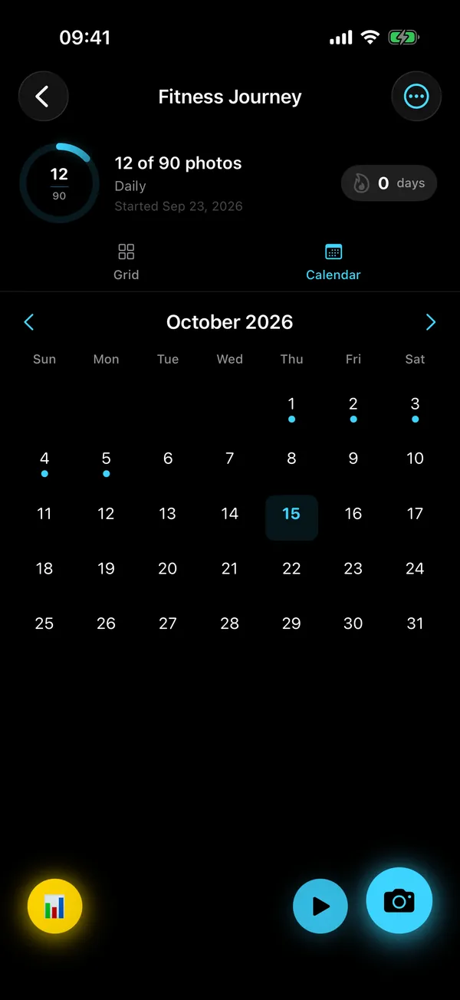

Guide · Any subject
How to take progress photos that actually line up
Your progress photos don't match because the camera moved, not because nothing changed. Here's how to fix the three kinds of drift for a body, a bump, a face, a plant or a room.
Quick answer
Progress photos drift for three reasons: distance (how far away the camera is), height (where it sits) and tilt (which way it points). Mark where you stand and where the phone goes, keep the phone at the same height, and match its tilt. Then keep the light, time of day, clothes and pose the same. A see-through "ghost" of your first photo turns all of this into a 20-second routine.
Why do my progress photos look different every time?
Because the camera moved, not you (or not only you). A few centimeters closer, a little higher or a slight tilt down, and the same body or face looks different enough to hide real change, or to invent some.
| What drifts | What it does to the photo | Quick fix |
|---|---|---|
| Distance | The subject looks bigger or smaller, and close-ups exaggerate whatever is nearest the lens. | Tape marks for your feet and for the phone |
| Height | Changes proportions: shot from above, legs look shorter and heads bigger; from below, the opposite. | A fixed shelf, a stack of books or a tripod |
| Tilt | Leans straight lines and shifts proportions, even when the height is right. | A level, matched to your reference photo |
| Light | Shadows add or hide definition; color casts change skin, leaves and walls. | Same window, same time of day |
| Lens | The 0.5× wide lens stretches the edges; switching lenses changes everything. | Pick one lens and stick to it |
How do I keep the same distance every time?
Mark two spots: where you (or the subject) stand, and where the phone goes. A strip of painter's tape on the floor and a small mark on the shelf are enough.
- Bodies and bumps: stand far enough back that you fit with a little space around you at 1×.
- Faces and beards: fill roughly the same part of the frame every time; a face shape guide makes that easy to see.
- Plants and rooms: the pot or the furniture never moves, so mark the phone's spot and you're done.
- Check against a ghost: if you look bigger than last time's see-through outline, step back; smaller, step forward.
How do I keep the camera at the same height?
Put the phone somewhere that doesn't move: a shelf, a stack of books or a cheap tripod. Chest height suits full-body and bump photos, eye level suits faces, and plants usually look best from a little above, at the same height every time.
Mirror selfies are the classic height trap: your arm is never in quite the same place twice. A phone in a fixed spot with a self-timer beats it every time.
How do I fix tilt, the one everyone forgets?
Match the phone's angle, not just its position. If the phone leans back against the books one week and stands upright the next, proportions change even though the height is identical.
This is the drift a "flat" spirit level can't fix, because your first photo may not have been perfectly level either. Solo.Shots saves the phone's tilt with every photo, and its level aims at the tilt of your reference photo (or true level if there isn't one). It gives a small buzz when you match it.


What about light, clothes and pose?
Keep them boring and identical. Consistency matters more than looking good in any single photo.
- Same light: same time of day, same window, facing the light. Overhead light alone makes deep shadows; turn the flash off.
- Lock focus and exposure so brightness doesn't jump from frame to frame (AE/AF lock in Solo.Shots).
- Same clothes, or the same kind of clothes. Loose layers hide shape.
- Same pose: arms, feet and expression the same way each time. Decide "relaxed" or "flexed" once and stick with it.
- Same background. Tidy is optional; the same is the goal.
Should the ghost show my first photo or my latest?
Use your first photo when the framing should never change (bodies, faces, plants, rooms): it pins your original framing, so tiny errors can't pile up week after week. Use your latest photo when the subject changes shape quickly (a bump, a baby, a seedling), so you match last week instead of week one.
| Ghost in Solo.Shots | Best for |
|---|---|
| First | Long projects where the framing must not drift: fitness, faces, beards, plants, rooms |
| Latest | Fast-changing subjects: bumps, babies, seedlings |
| Custom | Any photo in the project (choose "Use as Ghost"), e.g. after you moved house and set up a new spot |
| Photos | A photo from your library, e.g. an old picture you want to recreate |
Set the ghost's opacity to about half, so you can see both the ghost and the live picture.
How often should I take progress photos?
Daily for fast changes, weekly for bodies and bumps, monthly for slow changes. Pick one rhythm you can keep for months: consistency beats frequency.
| What you're tracking | Rhythm | Why |
|---|---|---|
| Beard or moustache, seedlings, a 30-day challenge | Daily | Change shows up within days |
| Fitness and body changes | Weekly | Shows the trend without the day-to-day ups and downs |
| Pregnancy | Weekly | Matches how pregnancy is counted |
| Baby's first year | Weekly or monthly | 52 frames, or 12 month-by-month photos |
| Houseplants, a renovation, art practice | Weekly | Enough frames without the chore |
| Hair growth, kids after year one | Monthly | Slow change; monthly is enough to see it |
In Solo.Shots, each project is daily, weekly or monthly. Reminders arrive at your time (every day, on Mondays for weekly projects, or on the 1st for monthly ones), your streak follows the same rhythm, and milestones pop up at 25, 50, 75 and 100 photos.

What's the 20-second routine?
Once the spot is set up, every photo is the same short checklist:
- Feet (or pot, or chair) on the tape mark.
- Phone in its place, same lens as always.
- Ghost on: first or latest, at about half opacity.
- Tilt matched: wait for the buzz.
- Focus and exposure locked.
- Self-timer (3, 5 or 10 seconds) if you're in the photo.
- Same pose, relaxed face. Shoot. Done until next time.
What should I do with the photos?
Look at them side by side every few weeks: that's where the motivation comes from. Then turn them into something you can watch or share.
- Day 1 vs today: Solo.Shots' DNA Card puts your first photo next to your latest, with your streak and 30-day consistency.
- A timelapse: see how to make a timelapse from photos on iPhone.
- A poster: a Mosaic, Colors or Timeline print of the whole project.
Progress photos work best as one small, visible habit inside a bigger plan. If you're getting your whole routine in order, the 7-day "where to start" plan shows how the pieces fit, and Solora keeps the other habits going.
Want body-fat estimates or a before/after slider instead? Those are different tools; the honest app comparison says which apps do them.
FAQ
Should I use the front or the back camera?
Either works, but don't switch halfway through a project: the two cameras see differently. The back camera usually gives the sharper photo; the front camera lets you watch yourself line up with the ghost from where you stand.
Do I need a tripod?
No. A shelf or a stack of books plus a tape mark works fine. A cheap phone tripod just makes the height quicker to repeat.
Are mirror selfies OK for progress photos?
They're quick, but every shot has a different arm position, height and angle, and the phone hides part of you. A phone in a fixed spot with a self-timer lines up far better.
What if I miss a day or a week?
Keep going. A missed photo is just one frame fewer in the timelapse. In Solo.Shots your streak starts again, but your project and photos stay exactly where they were.
Does Solo.Shots line photos up automatically after I take them?
Not for photos you take in a project: it helps you get each one right while you shoot, with the Photo Ghost, shape guides and an angle-matching level. Automatic alignment on the eyes is used when it builds a timelapse from photos already in your library.